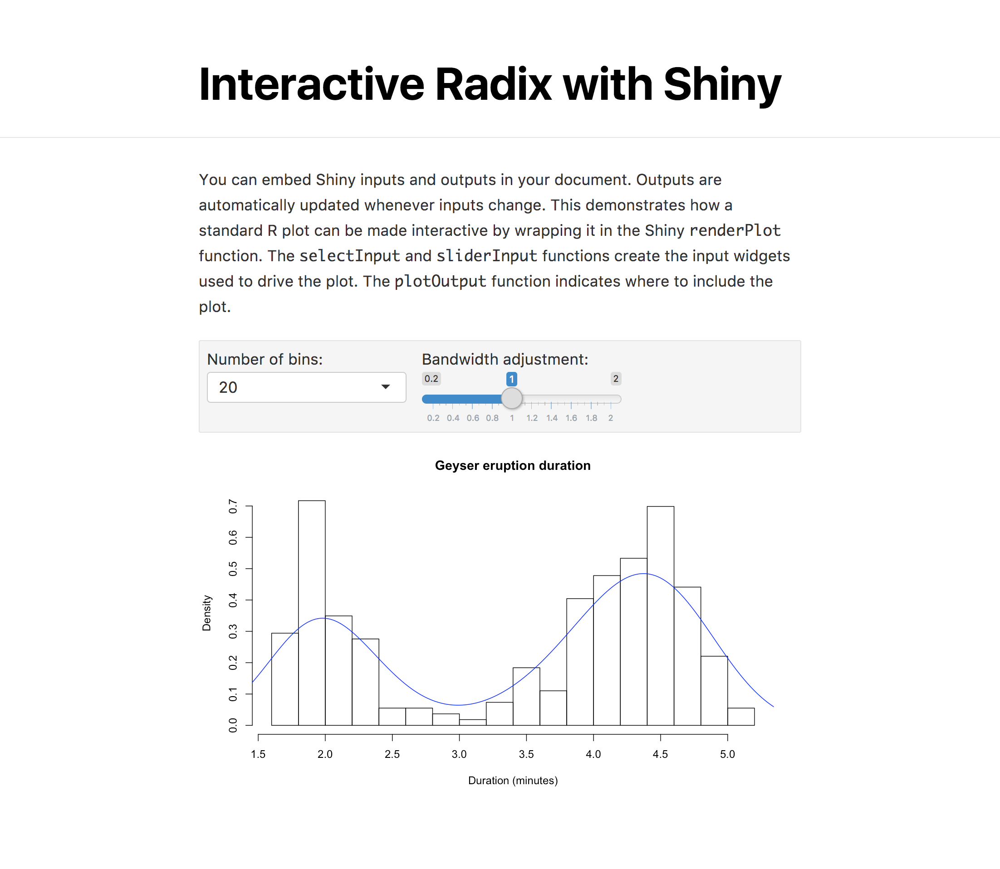

Enhance communication with interactive visualizations
There are a variety of ways to add interactivity to your Distill articles, including:
Using pre-built htmlwidgets that wrap JavaScript visualization libraries like Leaflet, Plotly, dygraphs, and threejs.
Creating custom D3.js interactive visualizations using the r2d3 package.
Using Shiny to create an interactive document that embeds interactive components within your article.
Including htmlwidgets within a Distill article is as easy as including an R plot. For example, the following code embeds a Leaflet map:
```{r}
library(leaflet)
leaflet() %>%
addTiles() %>% # Add default OpenStreetMap map tiles
addMarkers(lng=174.768, lat=-36.852, popup="The birthplace of R")
```You can also use figure layout options with htmlwidgets. For example, here we set distill.layout="l-page" to specify that we want the widget to span the width of the page:
```{r, distill.layout="l-page", fig.height=2}
library(dygraphs)
dygraph(ldeaths) %>%
dyRangeSelector()
```Note that we specify fig.height=2 to provide a more natural height for a widget that spans the entire width of the page.
To learn about available htmlwidgets see the showcase page and the htmlwidget gallery.
The r2d3 package enables you to easily incorporate interactive graphics created using D3.js in your Distill articles.
For example, the following renders an interactive Veronoi diagram created using D3:
```{r, distill.layout="l-page", fig.height=6}
library(r2d3)
r2d3(script = "voronoi.js")
```Note that we specify distill.layout="l-page" to indicate that we want the visualization to occupy the full width of the page.
You can use Shiny components within your Distill articles to allow your readers to change the parameters underlying your analysis and see the results immediately. To use Shiny with Distill, first specify that you want to use the Shiny runtime with your document:
---
title: "Interactive Distill with Shiny"
output: distill::distill_article
runtime: shiny
---This turns your Distill article into an interactive document, enabling you to add Shiny inputs and output directly to the document.
Here’s an example of a Distill article with interactive Shiny components (https://jjallaire.shinyapps.io/distill-interactive-document/):

This was the R code used to create the interactive Shiny components:
inputPanel(
selectInput("n_breaks", label = "Number of bins:",
choices = c(10, 20, 35, 50), selected = 20),
sliderInput("bw_adjust", label = "Bandwidth adjustment:",
min = 0.2, max = 2, value = 1, step = 0.2)
)
renderPlot({
hist(faithful$eruptions, probability = TRUE, breaks = as.numeric(input$n_breaks),
xlab = "Duration (minutes)", main = "Geyser eruption duration")
dens <- density(faithful$eruptions, adjust = input$bw_adjust)
lines(dens, col = "blue")
})You can see the full source code for this example at distill-interactive-document.Rmd.
Learn more interactive documents on the R Markdown website.